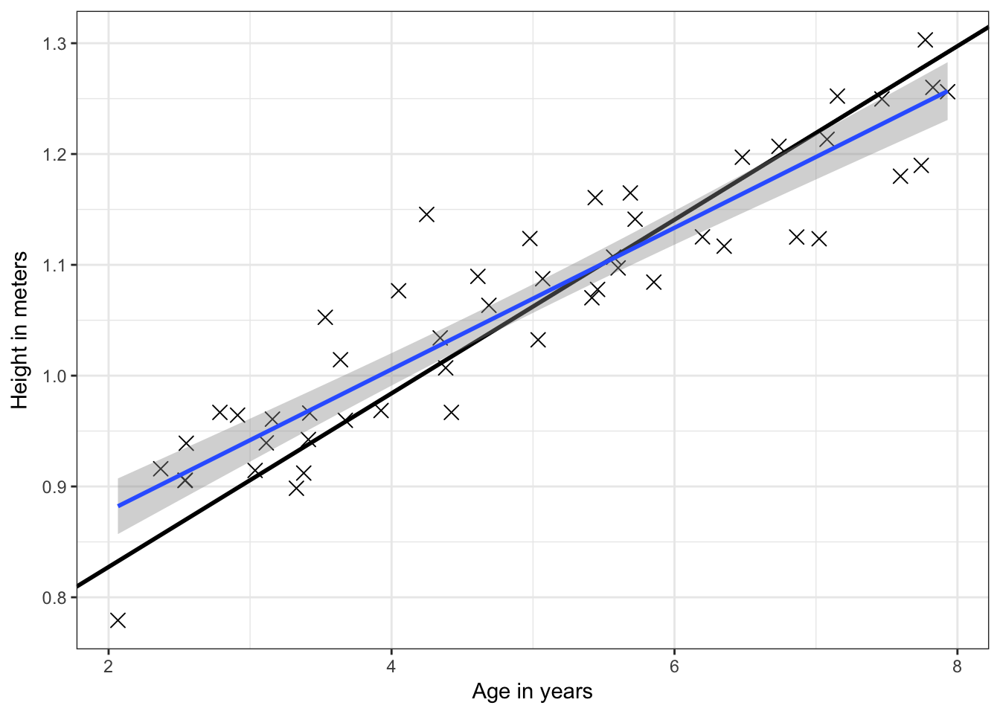
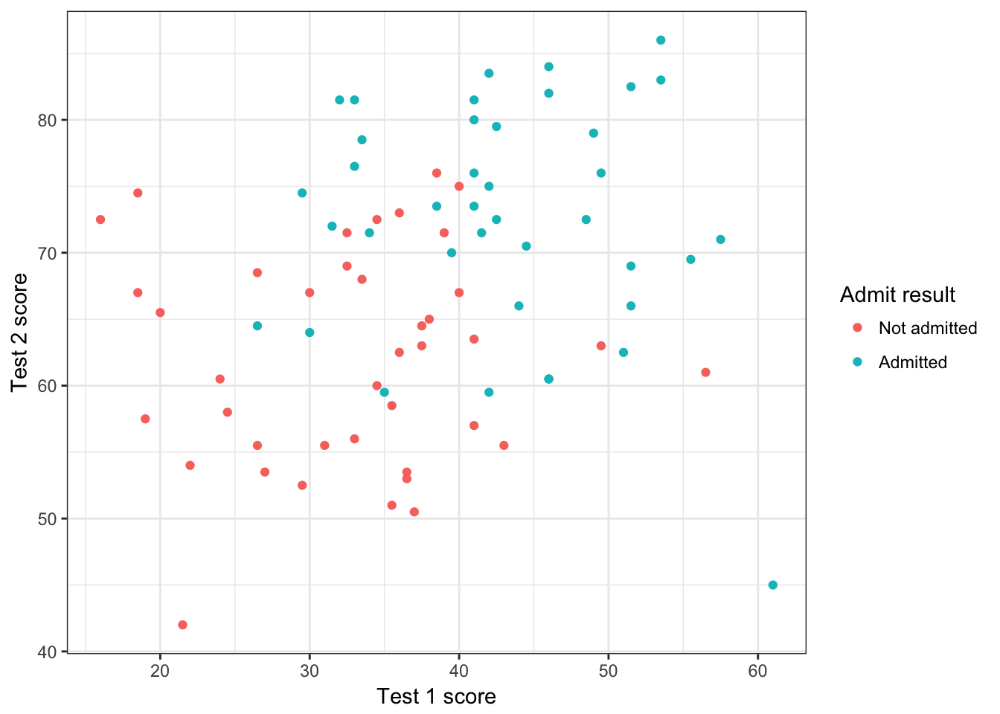
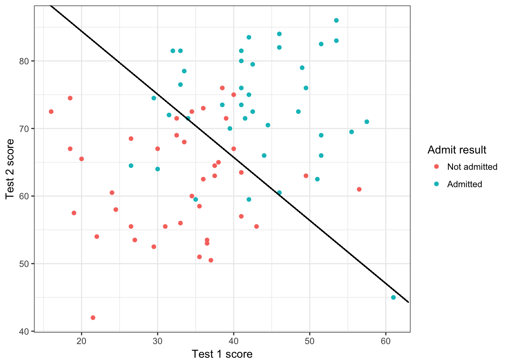
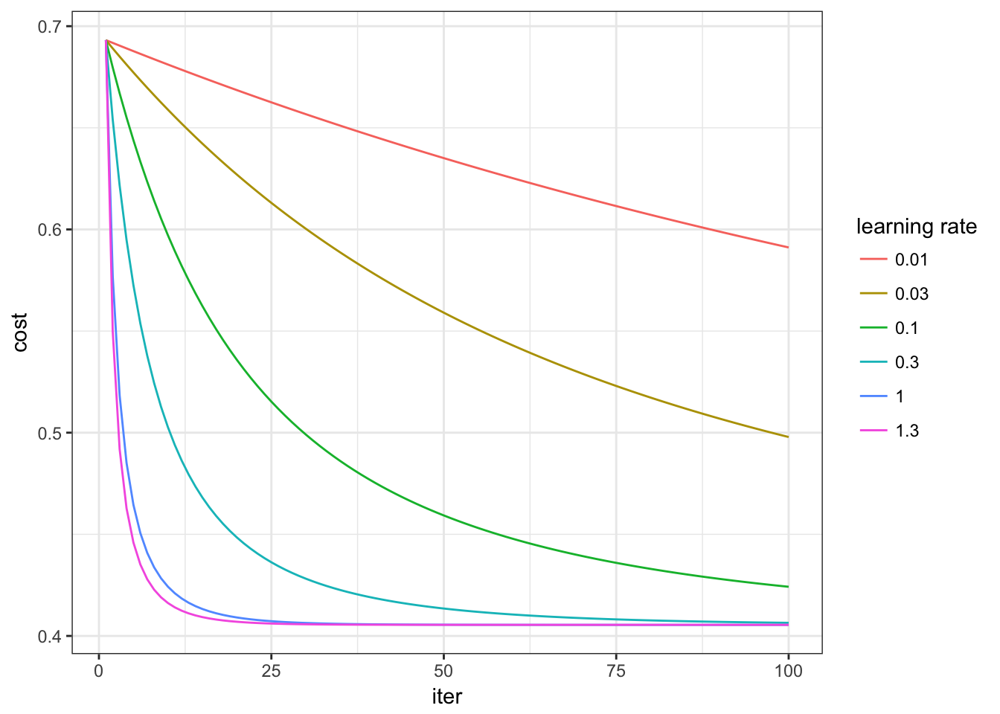
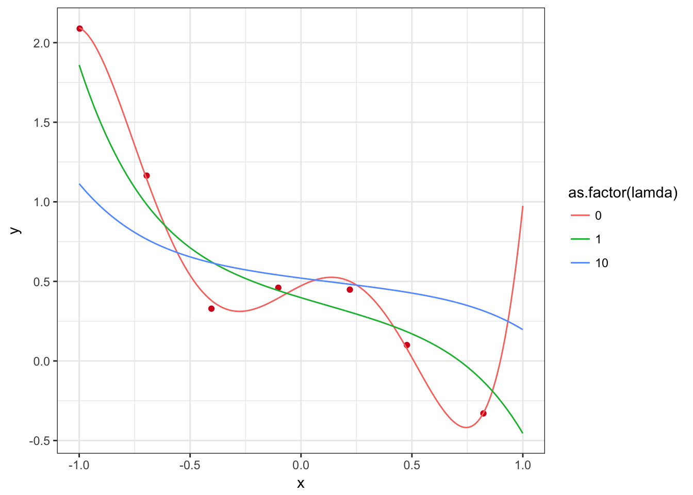
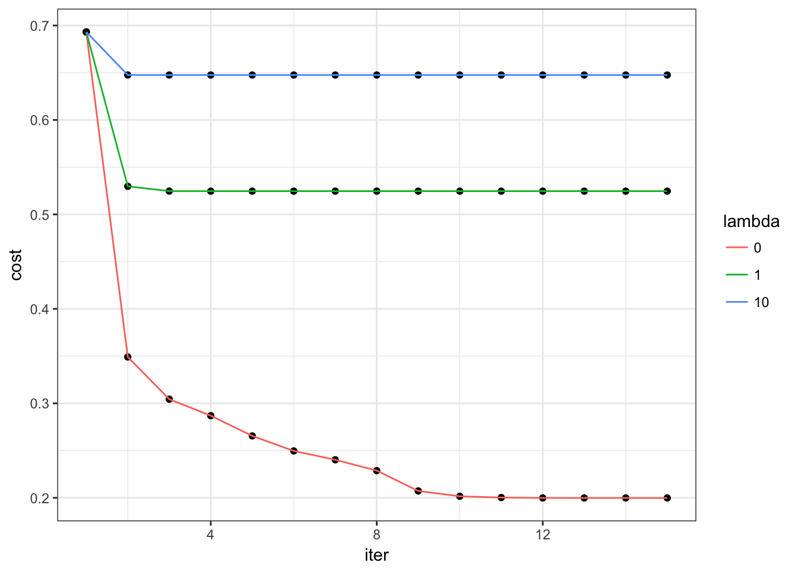

深度学习基础练习-R语言
前言
吴恩达有一套课程Deep Learning，对机器学习的基础理论做了非常好的介绍，上课视频质量非常好，而且练习题都设计得很有水平，并提供了Matlab的答案。本文针对这些练习题，提供了一份R语言版的答案。
练习2-线性回归
题目与数据请点这里
# read data: x is age, y is height
x <- read.csv("data/ex2Data/ex2x.dat", header=F)
y <- read.csv("data/ex2Data/ex2y.dat", header=F)
colnames(x) <- c("age")
colnames(y) <- c("height")
# scatter plot
input <- data.frame(age=x$age,height=y$height)
library(ggplot2)
p <- ggplot(aes(x=age, y=height), data=input)
p + geom_point(size=3,shape=3) + theme_bw() + xlab("Age in years") + ylab("Height in meters")# gradient descend algorithm implementation
x <- cbind(c(rep(1, nrow(x))), x$age)
y <- as.matrix(y)
theta <- c(rep(0,ncol(x)))
alpha <- 0.07
MAX_ITR <- 300
for(i in 1:MAX_ITR){
grad <- 1/nrow(x) * t(x) %*% (x %*% theta - y)
theta <- theta - alpha * grad
}
print(theta)## height
## [1,] 0.67068037
## [2,] 0.07833824# add fitted line to plot
p + geom_point(size=3,shape=4) + geom_abline(intercept=theta[1], slope=theta[2], size=1) + geom_smooth(method="lm", size=1) + theme_bw()+ xlab("Age in years") + ylab("Height in meters")
当MAX_ITR设为1500时，黑色直线将于蓝色直线非常接近。
练习3-多元线性回归
题目与数据请点这里
# read raw data
x <- read.table("data/ex3Data/ex3x.dat", header=F)
y <- read.table("data/ex3Data/ex3y.dat", header=F)
colnames(x) <- c("area", "room_num")
colnames(y) <- c("price")
# scatter plot
# input <- data.frame(area=x$area, room_num=x$room_num, price=y$price)
# plot(input)
# normalization
x <- cbind(rep(1, nrow(x)), x$area, x$room_num)
x[, 2:3] <- scale(x[, 2:3])
y <- as.matrix(y)
# learning rate experiment
library(ggplot2)
iter_num <- 50
alpha <- c(0.01, 0.03, 0.1, 0.3, 1, 1.3)
plot_data <- data.frame()
plot_color <- c('black', 'red', 'green', 'blue', 'orange', 'purple')
for(j in 1:length(alpha)){
theta <- c(rep(0, ncol(x)))
Jtheta <- c(rep(0, iter_num))
for(i in 1:iter_num){
Jtheta[i] <- (1/(2*nrow(x))) * t(x %*% theta - y) %*% (x %*% theta - y)
grad <- 1/nrow(x) * t(x) %*% (x %*% theta -y)
theta <- theta -alpha[j] * grad
}
plot_data <- rbind(plot_data,data.frame(iter=c(1:iter_num), cost=Jtheta, rate=alpha[j]))
}
p <- ggplot(plot_data)
p <- p + geom_line(aes(x=iter, y=cost, colour=as.factor(rate), group=rate))
p + theme_bw() + scale_colour_hue(name="learning rate")
# We find best convergency occurs when learning rate is 1
alpha <- 1.0
iter_num <- 100
theta <- c(rep(0, ncol(x)))
for(i in 1:iter_num){
grad <- 1/nrow(x) * t(x) %*% (x %*% theta -y)
theta <- theta -alpha * grad
}
# prediction for price of an apartment with area=1650 and room_num=3
x <- read.table("data/ex3Data/ex3x.dat", header=F)
y <- read.table("data/ex3Data/ex3y.dat", header=F)
colnames(x) <- c("area", "room_num")
colnames(y) <- c("price")
price_pred <- t(theta) %*% c(1, (1650-mean(x$area))/sd(x$area), (3-mean(x$room_num))/sd(x$room_num))
print(price_pred)## [,1]
## price 293081.5练习4-逻辑回归
题目和数据请点这里
# read raw data
x <- read.table("data/ex4Data/ex4x.dat", header=F)
y <- read.table("data/ex4Data/ex4y.dat", header=F)
colnames(x) <- c("t1_mark", "t2_mark")
colnames(y) <- c("admit")
# plot the data
input <- data.frame(t1_mark=x$t1_mark, t2_mark=x$t2_mark, admit=y$admit)
library(ggplot2)
p <- ggplot(data=input, aes(x=t1_mark, y= t2_mark, colour=as.factor(admit)))
p + geom_point() + theme_bw() + scale_colour_hue(name="Admit result",breaks=c(0,1),labels=c("Not admitted","Admitted")) + xlab("Test 1 score") + ylab("Test 2 score")
# Newton-Raphson's method implementation
sigmoid_value <- function(z){
return (1/(1+exp(-z)))
}
x <- cbind(rep(1,nrow(x)), x$t1_mark, x$t2_mark)
y <- as.matrix(y)
iter_num <- 7
theta <- rep(0, ncol(x))
Jtheta <- rep(0, iter_num)
for(i in 1:iter_num){
z <- x %*% theta
h <- sigmoid_value(z)
# get gradient, Hession and cost function
grad <- 1/nrow(x) * t(x)%*%(h-y)
H <- (1/nrow(x)) * t(x) %*% diag(as.vector(h)) %*% diag(1-as.vector(h)) %*% x
Jtheta[i] <- 1/nrow(x) * sum(-y*log(h)-(1-y)*log(1-h))
theta <- theta - solve(H)%*%grad
}
curve <- data.frame(iter=c(1:iter_num), cost=Jtheta)
ggplot(data=curve,aes(x=iter,y=cost)) + geom_line() + geom_point() + theme_bw()theta## admit
## [1,] -16.3787434
## [2,] 0.1483408
## [3,] 0.1589085# Predict the not admit probability of a student with t1_score=20 and t2_score=80
prob <- 1 - sigmoid_value(c(1,20,80)%*%theta)
# Plot the decision boundary line
plot_x <- c(min(x[,2])-2, max(x[,2])+2)
plot_y <- (-1/theta[3])*(theta[2]*plot_x+theta[1])
p + geom_point() + theme_bw() + geom_segment(x=plot_x[1],xend=plot_x[2],y=plot_y[1],yend=plot_y[2], colour="black") + scale_colour_hue(name="Admit result",breaks=c(0,1),labels=c("Not admitted","Admitted")) + xlab("Test 1 score") + ylab("Test 2 score")
# 此处尝试用梯度下降法求解逻辑回归，发现很久不收敛，不知道是不是写错了
# Gradient dscend algorithm implementation
iter_num <- 10000
#alpha <- c(0.01, 0.03, 0.1, 0.3, 1, 1.3)
alpha <- c(0.00001,0.00003,0.0001,0.0003,0.001,0.0013,0.0014)
plot_data <- NULL
for(j in 1:length(alpha)){
Jtheta <- rep(0, iter_num)
theta <- rep(0, ncol(x))
for(i in 1:iter_num){
z <- x%*%theta
h <- sigmoid_value(z)
Jtheta[i] <- 1/nrow(x) * sum(-y*log(h)-(1-y)*log(1-h))
grad <- 1/nrow(x) * t(x)%*%(h-y)
theta <- theta - alpha[j] * grad
}
if(is.null(plot_data)){
plot_data <- data.frame(iter=c(1:iter_num), cost=Jtheta, rate=alpha[j])
}
else {
plot_data <- rbind(plot_data,data.frame(iter=c(1:iter_num), cost=Jtheta, rate=alpha[j]))
}
}
p <- ggplot(plot_data)
p <- p + geom_line(aes(x=iter, y=cost, colour=as.factor(rate), group=rate))
p + theme_bw() + scale_colour_hue(name="learning rate")
注：梯度下降久久不收敛，估计是代码哪里写错了，暂时没搞明白。
练习5-正则化
题目和数据请点这里
该题目分为线性回归与逻辑回归两个部分。
线性回归
# read raw data
x <- read.table("data/ex5Data/ex5Linx.dat",header=F)
y <- read.table("data/ex5Data/ex5Liny.dat",header=F)
# plot the data
library(ggplot2)
input <- cbind(x,y)
colnames(input) <- c("x","y")
p <- ggplot() + theme_bw()
p <- p + geom_point(data=input,aes(x=x,y=y),colour=rgb(213/255,26/255,33/255))
p#normal equation method
f1 <- function(x, theta){
return (as.vector((matrix(c(rep(1,length(x)),x,x^2,x^3,x^4,x^5),nrow=length(x), ncol=6, byrow=FALSE) %*% theta)))
}
lamda <- c(0,1,10)
x <- as.matrix(cbind(rep(1,nrow(x)),x,x^2,x^3,x^4,x^5))
y <- as.matrix(y)
rm <- diag(c(0, rep(1,ncol(x)-1)))
curve <- NULL
for(i in 1:length(lamda)){
theta <- solve((t(x)%*%x+lamda[i]*rm))%*%t(x)%*%y
xx <- seq(-1,1,0.001)
yy <- f1(xx, theta)
if(is.null(curve)){
curve <- data.frame(x=xx,y=yy,lamda=rep(lamda[i],length(xx)))
}
else {
curve <- rbind(curve, data.frame(x=xx,y=yy,lamda=rep(lamda[i],length(xx))))
}
print(theta)
}## V1
## rep(1, nrow(x)) 0.4725288
## V1 0.6813529
## V1 -1.3801284
## V1 -5.9776875
## V1 2.4417327
## V1 4.7371143
## V1
## rep(1, nrow(x)) 0.3975953
## V1 -0.4206664
## V1 0.1295921
## V1 -0.3974739
## V1 0.1752555
## V1 -0.3393877
## V1
## rep(1, nrow(x)) 0.52047074
## V1 -0.18250706
## V1 0.06064258
## V1 -0.14817721
## V1 0.07433006
## V1 -0.12795737p <- p + geom_line(data=curve, aes(x=x,y=y,group=lamda,colour=as.factor(lamda)))
p
可以看到当正则项的惩罚系数越大时，拟合效果越差；当惩罚系数过小时，又存在过拟合问题。
逻辑回归
x <- read.table("data/ex5Data/ex5Logx.dat",sep=",", header=F)
y <- read.table("data/ex5Data/ex5Logy.dat", header=F)
colnames(x) <- c("u","v")
colnames(y) <- c("type")
#plot the data
input <- data.frame(u=x$u,v=x$v,type=as.factor(y$type))
p <- ggplot() + theme_bw()
p <- p + geom_point(data=input,aes(x=u,y=v,shape=type, size=3))
#p <- p + scale_colour_manual(values=c('blue','red')) + labs(colour='Type')
p <- p + scale_shape_manual(values=c('o','+')) + labs(shape='Type')
p <- p + scale_size(guide="none")
p#utility function
map_feature <- function(feat1, feat2){
degree <- 6
out = rep(1,length(feat1))
for(i in 1:degree){
for(j in 0:i){
out <- cbind(out,(feat1^(i-j)*feat2^j))
}
}
return (out)
}
f1 <- function(x, theta){
return (as.vector(map_feature(x$u,x$v) %*% theta))
}
#sigmoid function
sigmoid_value <- function(z){
return (1/(1+exp(-z)))
}
#Newton-Raphson's Method
lambda <- c(0,1,10)
out <- map_feature(x$u,x$v)
y <- as.matrix(y)
curve <- NULL
con_store <- NULL
u <- seq(-1,1.5,0.05)
v <- seq(-1,1.5,0.05)
for(i in 1:length(lambda)){
iter_num <- 15
theta <- rep(0, ncol(out))
Jtheta <- rep(0, iter_num)
con <- matrix(0, nrow=length(u)*length(v), ncol=4)
for(j in 1:iter_num){
h <- sigmoid_value(out%*%theta)
#cost function, judge if converged
Jtheta[j] <- 1/nrow(out)*sum(-y*log(h)-(1-y)*log(1-h)) + lambda[i]/(2*nrow(out))*sum(theta[-1]^2)
#gradient
grad <- 1/nrow(out)*t(out)%*%(h-y) + lambda[i]/nrow(out)*c(0, theta[-1])
#hession
H <- 1/nrow(out)*t(out)%*%diag(as.vector(h))%*%diag(1-as.vector(h))%*%out + lambda[i]/nrow(out)*diag(c(0, rep(1,ncol(out)-1)))
theta <- theta - solve(H)%*%grad
}
if(is.null(curve)){
curve <- data.frame(iter=c(1:iter_num), cost=Jtheta, lambda=lambda[i])
}
else {
curve <- rbind(curve,data.frame(iter=c(1:iter_num), cost=Jtheta, lambda=lambda[i]))
}
for(k in 1:length(u)){
for(l in 1:length(v)){
z <- map_feature(u[k],v[l])%*%theta
con[(k-1)*length(v)+l, 1] = u[k]
con[(k-1)*length(v)+l, 2] = v[l]
con[(k-1)*length(v)+l, 3] = z
con[(k-1)*length(v)+l, 4] = lambda[i]
}
}
if(is.null(con_store)){
con_store <- as.data.frame(con)
}
else {
con_store <- rbind(con_store,con)
}
}
#plot convergency draft
ggplot(data=curve) + theme_bw() + geom_point(aes(x=iter, y=cost)) + geom_line(aes(x=iter,y=cost, group=lambda, colour=as.factor(lambda))) + scale_color_hue(name="lambda")
colnames(con_store) <- c("x","y","z","lambda")
p <- p + stat_contour(data=con_store,aes(x=x,y=y,z=z,group=as.factor(lambda), colour=as.factor(lambda), size=2),breaks=c(0)) + scale_color_hue(name="Lambda")
p为数据分析师分享python和R的技术资料
Copyright © 2016 陈水平. All rights reserved.